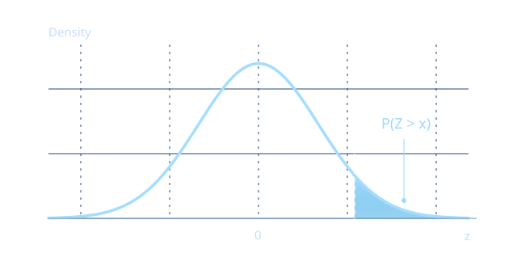

RUNTIME
Did this source run in Excel?
The retained regression record identifies the executed source, Excel environment, assertions and exported grids.
Inspect the Excel record ↗Numerical foundations / Excel & VBA
A native numerical library for the spreadsheets you need to explain.
Calculate densities, probabilities and quantiles with inspectable VBA algorithms, direct upper-tail functions and explicit numerical contracts.

=K_STATS_NormalStandard_Survival(15)≈ 3.67096619931 × 10−5101 / The numerical approach
For research, risk models, independent validation and teaching. Follow a calculation from the worksheet call to the kernel and the evidence behind it.
Use survival functions for upper-tail probabilities. Subtracting a CDF from one can lose a small but representable result when the CDF rounds to one.
Survival(x) → P(X > x)Shared special functions, guarded arithmetic and inverse solvers are implemented in exported VBA modules. No external numerical runtime is needed to use the library.
Explore the numerical design ↗Independent references, accuracy contracts and holdout observations make the tested scope visible. Explicit diagnostics distinguish invalid inputs and numerical limits.
Read the benchmark method ↗Direct-tail APIs avoid the information loss in a caller's 1 − CDF expression. This is not a claim that every alternative Excel formula fails, or that every library function has uniform accuracy across its entire domain.
02 / Distribution catalogue
Start with a distribution, then inspect its parameterization and supported operations. Inverse survival is available for the Normal family.
17 distribution surfaces
| Distribution | Core operations | Also available |
|---|---|---|
| Standard NormalContinuous | Density · CDF · survival · inverse CDF | Inverse survival · interval probability · fast inverse helper |
| NormalContinuous | Density · CDF · survival · inverse CDF | Inverse survival · interval probability · Z-score |
| LognormalContinuous | Density · CDF · survival · inverse CDF | Inverse survival · moments · parameter conversion |
| Student tContinuous | Density · CDF · survival · inverse CDF | — |
| Chi-squareContinuous | Density · CDF · survival · inverse CDF | — |
| FContinuous | Density · CDF · survival · inverse CDF | — |
| GammaContinuous | Density · CDF · survival · inverse CDF | Mean · variance · standard deviation |
| BetaContinuous | Density · CDF · survival · inverse CDF | Mean · variance · standard deviation |
| ExponentialContinuous | Density · CDF · survival · inverse CDF | — |
| WeibullContinuous | Density · CDF · survival · inverse CDF | Mean · variance · standard deviation |
| UniformContinuous | Density · CDF · survival · inverse CDF | — |
| BinomialDiscrete | PMF · CDF · survival · inverse CDF | Log-PMF · mean · variance · standard deviation |
| PoissonDiscrete | PMF · CDF · survival · inverse CDF | Log-PMF · mean · variance · standard deviation |
| GeometricDiscrete | PMF · CDF · survival · inverse CDF | Log-PMF · mean · variance · standard deviation |
| Negative BinomialDiscrete | PMF · CDF · survival · inverse CDF | Log-PMF · mean · variance · standard deviation |
| HypergeometricDiscrete | PMF · CDF · survival · inverse CDF | Log-PMF · mean · variance · standard deviation |
| Discrete UniformDiscrete | PMF · CDF · survival · inverse CDF | Log-PMF · mean · variance · standard deviation |
No matching distribution. Try a different name or select “All distributions”.
Open the complete API reference ↗03 / Worksheet examples
Import the VBA modules into desktop Excel, then call the functions from a cell. These examples show the API; this page does not execute VBA.
Calculate P(Z > 8) for a standard Normal variable without subtracting a rounded CDF from one.
=K_STATS_NormalStandard_Survival(8)The probability is approximately 6.22 × 10⁻¹⁶. This is a usage example, not a domain-wide accuracy guarantee.
04 / Get started
Clone the repository for development, or inspect the source before importing it. Keep all modules from the same revision.
git clone https://github.com/danielep71/VBA-PROBABILITY-DISTRIBUTIONS.gitsrc/.Test_STATS_PROBDIST_RunAll.The installation guide defines the host and validation requirements. Retained Excel evidence covers a specific Windows / 64-bit Office environment; it does not establish compatibility with every Excel platform.
05 / Evidence and boundaries
Inspect the current records rather than relying on a frozen badge. Each kind of evidence answers a different question.
RUNTIME
The retained regression record identifies the executed source, Excel environment, assertions and exported grids.
Inspect the Excel record ↗NUMERICAL ACCURACY
Independent references and explicit contracts record errors within tested regimes. The holdout adds separate observations.
Read the accuracy summary ↗Inspect the independent holdout ↗RELEASE READINESS
Passing recorded tests does not certify a release. Coverage gaps, numerical limitations and outstanding work remain explicit.
Follow the release tracker ↗Explore the open work ↗Research / Risk modelling / Education